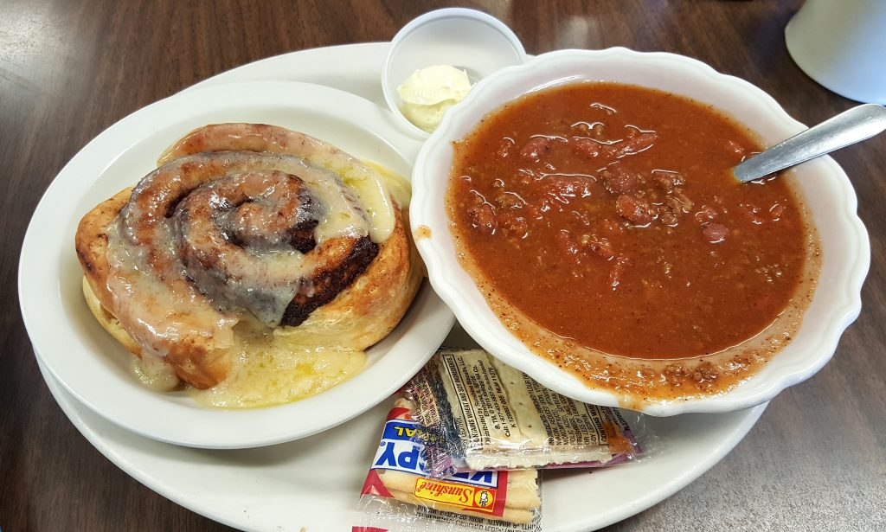

Chili and Cinnamon Rolls

Description
A regional midwestern classic that makes the rest of the country question
our sanity. This is a recipe for chili with cinnamon rolls! Now, you can
use any kind of cinnamon roll you'd like. You can make your own from scratch,
buy some from a bakery, or, what I do, get the canned version ready to bake!
What makes this strange combination work is the spicy and savoriness from
the chili combined with the sugary sweentess of the cinnamon roll. Some
people choose to have these separately, but I prefer to take a spoonful
of chili and add a piece of cinnamon roll on top for a delightful flavor
combination!
Ingredients
- 1 T olive oil
- 1 medium yellow onion, diced
- 1lb ground beef
- 2 1/2 T chili powder
- 1/2 T ground cumin
- 2 T granulated sugar
- 2 T tomato paste
- 1 T garlic powder
- 1 1/2 t salt
- 1/2 t pepper
- 1/4 t cayenne
- 1 1/2 C beef broth
- 15oz. can petite diced tomatoes
- 16oz. can red kidney beans, drained and rinsed
- 8oz. can tomato sauce
Instructions
- Add olive oil to a large soup pot, place over medium-hi heat
- Add the onion, saute for 5 minutes
- Add the ground beef to the pot, cook until browned
- Add the chili powder, cumin, sugar, tomato paste, garlic powder,
salt, pepper, and cayenne. Stir until well combined.
- Add the broth, diced tomatoes, drained beans, and tomato sauce.
Stir well.
- Bring to a low boil, then reduce to a simmer. Continue simmering for
20-25 minutes, stirring occasionally. Meanwhile, prepare your cinnamon rolls and bake according to package
instructions
- Remove chili from heat, let rest for 5-10 minutes. Enjoy!